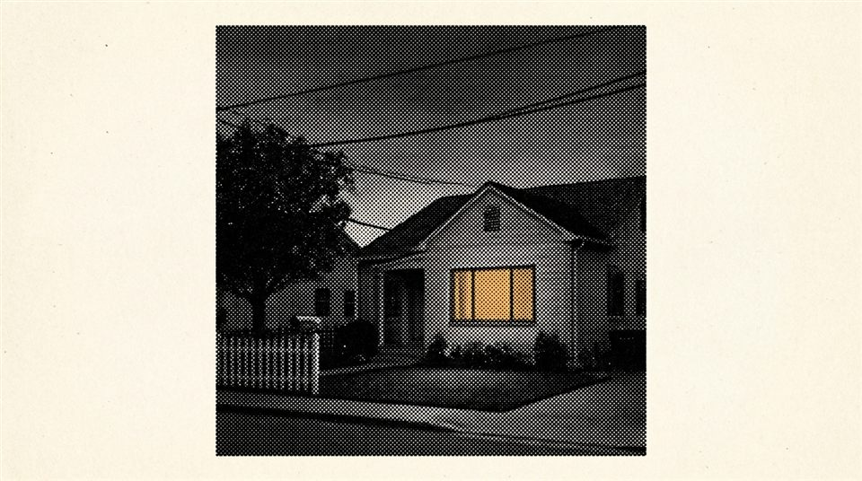

REC-01

Ask, and It
Answers
YOU CAN'T GOOGLE YOUR GRANDMOTHER'S ADVICE, OR WHAT YOUR FATHER
LEARNED THE HARD WAY. YOU CAN ASK MORROW.
ASK IN PLAIN WORDS AND IT SEARCHES THE WHOLE ARCHIVE, THEN ANSWERS
FROM THE FAMILY'S OWN RECORDS, SHOWING YOU WHERE EACH PART CAME FROM.
NOT A BOOK THAT ENDS; A LIVING RECORD THAT KEEPS GROWING.